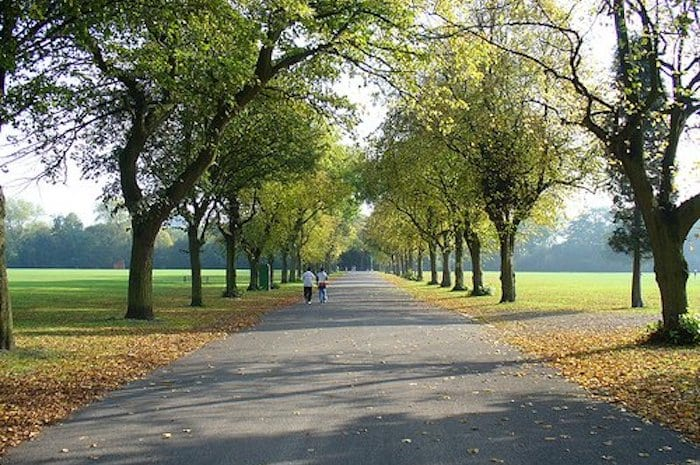

Green Park located in Machester is a wonderful public place for all people to visit,It began as a private park for the residents of houses surrounding it before Manchester acquired it in 1867 and turned it into a public park with an ornamental pond and a bandstand.

More about the greenpark.
is a peaceful refuge for people living, working or visiting central London, and is particularly popular for sunbathing and picnics in fine weather. the main challeneg is to inspire young people from the age of 18-25 years old living in Manchester to explore and spend time in their local green spaces and fully engage with the nature on thier doorstep in thier everyday lives
here are some reviews for past residents and their experience with greenpark.